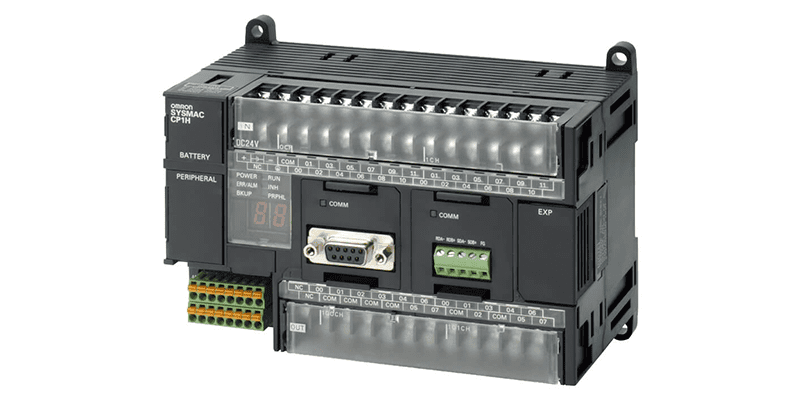
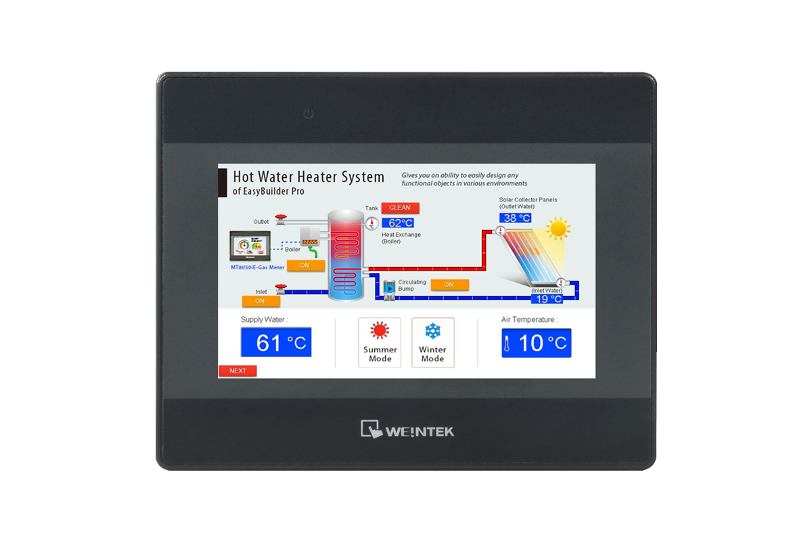
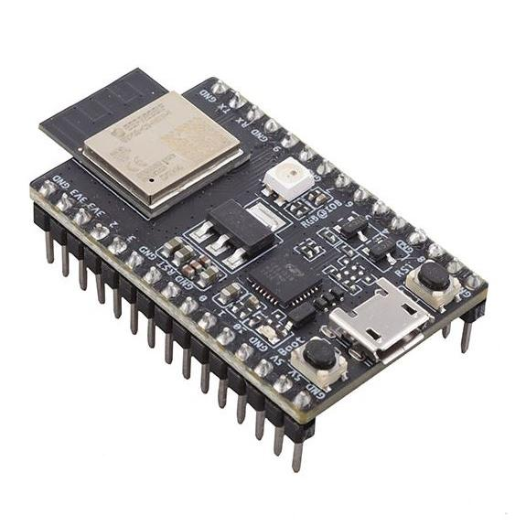
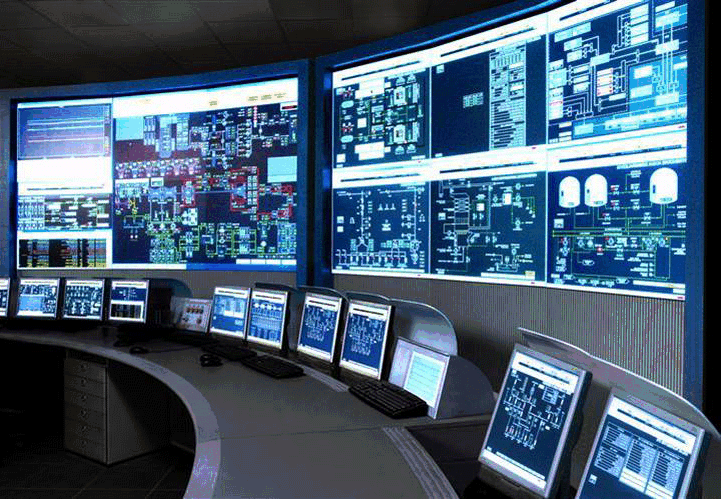
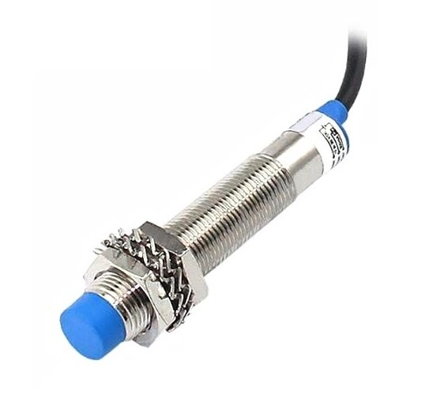

PLC (Programmable Logic Controller)
PLC (Programmable Logic Controller) adalah perangkat elektronik yang digunakan untuk mengontrol proses industri secara otomatis. PLC dapat diprogram untuk mengatur berbagai macam mesin atau peralatan dalam pabrik dengan memanfaatkan input dan output yang dikontrol melalui program logika. PLC banyak digunakan dalam otomatisasi pabrik, kontrol mesin, dan pengolahan data industri.
HMI (Human Machine Interface)
HMI (Human Machine Interface) adalah antarmuka antara operator dan mesin atau sistem kontrol. HMI memungkinkan operator untuk memonitor dan mengendalikan proses industri melalui tampilan grafis yang interaktif. HMI banyak digunakan dalam sistem otomasi untuk menampilkan status perangkat, alarm, dan parameter yang relevan.
ESP32
ESP32 adalah mikrokontroler yang memiliki fitur WiFi dan Bluetooth yang sangat kuat. Mikrocontroller ini banyak digunakan dalam pengembangan sistem otomasi berbasis IoT (Internet of Things), sensor, dan aplikasi berbasis web. ESP32 menawarkan kemudahan dalam pengembangan proyek otomasi karena dapat dikendalikan secara nirkabel.
SCADA (Supervisory Control and Data Acquisition)
SCADA adalah sistem kontrol yang digunakan untuk memantau dan mengontrol proses industri yang tersebar di berbagai lokasi. SCADA mengumpulkan data dari perangkat di lapangan dan menyajikannya dalam bentuk grafik atau laporan, memungkinkan operator untuk melakukan analisis dan kontrol jarak jauh.
Proximity Sensor
Sensor Proximity adalah jenis sensor yang digunakan untuk mendeteksi keberadaan objek tanpa kontak langsung. Sensor ini sering digunakan dalam sistem otomasi industri untuk mendeteksi posisi atau pergerakan objek dalam jalur produksi, serta untuk berbagai aplikasi keamanan.
